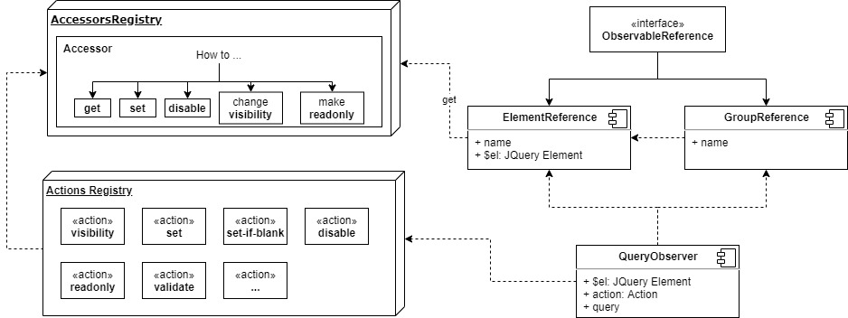

EAK Additional properties
DependsOn Plugin Client Library
Authors: Alexey Stsefanovich (ala'n), Yana Bernatskaya (YanaBr), Stepan Miakchilo, Liubou Masiuk
Version 2.6.0
The DependsOn Plug-in is a clientlib that executes defined actions on dependent fields.
The DependsOn Plug-in uses data attributes to get the expected configuration. To define data attributes from JCR, use the granite:data sub-node under the widget node. EToolbox Authoring Kit provides a set of annotations to use DependsOn from Java code.
The DependsOn workflow consists of the following steps:
ObservedReference ─┐
ObservedReference ─── QueryObserver[Query]* ─── Action*
ObservedReference ─┘
QueryObserver and Action are always a part of the DependsOn workflow.
Action defines what the plug-in should do with the dependent field (show/hide, set value, etc).
The Query always goes with the Action and defines an expression that should be used as the Action's input.
QueryObserver holds and processes Query and initiates Action on ObservedReferences changes.
ObservedReferences are external elements or groups of elements whose values can be used inside the Query.
More details on the structure of DependsOn are presented below:

Introduction
The DependsOn plug-in is based on the following data attributes:
For dependent fields:
data-dependson- to provide Query with a condition or expression for the Actiondata-dependsonaction- (optional) to define the Action that should be executeddata-dependsonskipinitial- (optional) a marker to disable initial execution
For referenced fields:
data-dependsonref- to mark a field that is referenced in the Query.data-dependsonreftype- (optional) to define the expected type of reference value.data-dependsonreflazy- (marker) an attribute to mark a reference as lazy. In this case, DependsOn will not observe rapid events likeinput.
Using DependsOn
Actions
Built-in plug-in actions are:
visibility- hide the element if the Query result is 'falsy'. This is the default action that is applied when no action is specified.tab-visibility- hide the tab or the element's parent tab if the Query result is 'falsy'set- set the Query result as the field's value (undefined Query result skipped)set-if-blank- set the Query result as the field's value only if the current value is blank (undefined Query result skipped)readonly- set the readonly marker of the field from the Query result.required- set the required marker of the field from the Query result.validate- set the validation state of the field from the Query result.disabled- set the field's disabled state from the Query result.
Async actions
Built-in plug-in async actions:
fetch- an action to set the result of fetching an arbitrary resource. It uses Query result as a target path to a node or property. The path should end with the property name or '/' to retrieve the whole node. The path can be relative (e.g. 'node/property' or '../../property') or absolute ('whole/path/to/the/node/property'). Additional parameters:map(optional) - function(result: any, name: string, path: string) => anyto process result. Can be used as mapping/keys-filtering or can provide more complicated actions.err(optional, map to empty string and log error to console by default) - function(error: Error, name: string, path: string) => anyto process error. Can be used to map or ignore error results. Note: If the mapping result isundefinedthen the action will not change the current value.postfix(optional,.jsonby default) - a string to append to the path if it is not already presented
Widget-specific actions
update-options- changes the option set of a Granite Select component based on the path from the Query result. The path can lead to any endpoint that is supported by the Option Provider mechanism.
Action Registry
Custom action can be specified using Granite.DependsOnPlugin.ActionRegistry.
An action should have a name and function to execute. Action names support lower-case letters, numbers and '-'. All upper-case letters will be transformed to lower case. For example built-in set action is defined as follows:
Granite.DependsOnPlugin.ActionRegistry.register('set', function setValue(value) {
if (value !== undefined) {
Granite.DependsOnPlugin.ElementAccessors.setValue(this.$el, value);
}
});
Reference Types
Allowed reference types:
boolean- cast to boolean (according to JS cast rules)boolstring- cast as a string value to boolean (true if string cast equals "true")number- cast to number valuestring- cast to stringjson- parse JSON string
If the type is not specified manually, it will be chosen automatically based on the type of element widget (see preferableType in the ElementsAccessor definition).
In any other case (e.g. if the type is any), no cast will be performed.
Note: If you use a Hidden field to save a temporary boolean result, use boolstring reference type in order to retrieve it.
ElementsAccessor Registry
Registry Granite.DependsOnPlugin.ElementAccessors - can be used to define the custom accessors of an element. The accessor provides information on how to get/set values, set a require/visibility/disabled state, or returns preferableType for the specific type of component.
For example, a default accessor descriptor is defined as follows:
Granite.DependsOnPlugin.ElementAccessors.registerAccessor({
selector: '*', // Selector to filter element
preferableType: 'string',
get: function($el) {
return $el.val() || '';
},
set: function($el, value) {
$el.val(value);
},
required: function($el, val) {
$el.attr('required', val ? 'true' : null);
$el.attr('aria-required', val ? 'true' : null);
Granite.DependsOnPlugin.ElementAccessors.updateValidity($el);
},
visibility: function ($el, state) {
$el.attr('hidden', state ? null : 'true');
$el.closest('.coral-Form-fieldwrapper').attr('hidden', state ? null : 'true');
if (!state) {
Granite.DependsOnPlugin.ElementAccessors.clearValidity($el);
}
},
disabled: function ($el, state) {
$el.attr('disabled', state ? 'true' : null);
$el.closest('.coral-Form-fieldwrapper').attr('disabled', state ? 'true' : null);
if (!state) {
Granite.DependsOnPlugin.ElementAccessors.clearValidity($el);
}
}
});
Query Syntax
A Query is a plain JavaScript condition or expression. Any global and native JavaScript object can be used inside a Query. You can also use dynamic references to access other fields' values. In order to define a reference, the referenced field's name should be specified in a dependsOnRef attribute. Then the reference will be accessible in the Query using the @ or @@ symbol and reference name.
Using Semicolons in DependsOn Queries
DependsOn queries are always treated as a single JavaScript expression and never as multiple statements in one line. Semicolon symbols (;) within a DependsOn Query must be escaped.
If you add a Query via a Java annotation, semicolons will be escaped automatically:
class MyComponent {
@DependsOn(query = "@field === ';'")
private String field1;
}
But, if you write directly to XML or HTML, you should escape them by hand:
<granite:data dependson="@field === '\\;'"/>
If you need to actually execute several JavaScript statements within a DependsOn, you can do this by wrapping them in a function call:
class MyComponent {
@DependsOn(query = "function(){ var a = @field1 + @field2; return a * a < 4; }()")
private String field;
}
Be aware that it is still better to move complex structures to a standalone client library
// project-clientlib.js
window.MyUtils = window.MyUtils || {};
window.MyUtils.fieldAccepted = function (field1, field2) {
var a = field1 + field2;
return a * a < 4;
};
class MyComponent {
@DependsOn(query = "MyUtils.fieldAccepted(@field1, @field2)")
private String field;
}
Query Reference Syntax
There are two versions of references available in the Queries:
- 'Single' reference:
@reference. 'Single' reference starts from the@symbol in the Query, it allows you to access a defined field value. 'Single' reference should reference an existing field and will not be reattached on dynamic DOM change. - 'Multiple' reference:
@@reference. Starts from double@symbols. Allows you to access a group of field values marked by the same reference name. 'Multiple' reference always returns an array in the Query.
Note: 'multiple' reference triggers Query update on any group update: changing some of group’s fields value or adding/removing a referenced field.
'this' is a reserved word for reference names. Using @this you can retrieve the value of the current element. In this case there is no need to specify a reference name unless you want to use it outside the current element.
The area to find a referenced field can be narrowed down by providing the Scope. The Scope is a CSS Selector of the closest container element. The Scope is defined in parentheses after the reference name.
Examples:
@enableCta (coral-panel)- will reference the value of the field marked bydependsOnRef=enableCtain bounds of the closest parent Panel element.@enableCta (.my-fieldset)- will reference the value of the field marked bydependsOnRef=enableCtain bounds of the closest parent container element with "my-fieldset" class.@@enableCta (coral-multifield)- will reference all values of the fields marked bydependsOnRef=enableCtain bounds of the closest multifield.
"Back-forward" CSS selectors are available in the Scope syntax, i.e. we can define the CSS selector to determine the parent element and then provide a selector to search the target element for scope in bounds of the found parent. Back and forward selectors are separated by '|>'.
For example:
@enableCta (section |> .fieldset-1)- will reference the value of the field marked bydependsOnRef=enableCtain bounds of element withfieldset-1class placed in the closest parent section element.
Multiple Actions
Multiple actions with Queries can be defined. Queries/Actions should be separated by ';' and placed in the same order. The number of Actions should match the number of Queries.
Static action’s params can be passed through data attributes with the following syntax:
- for a single and first action
data-dependson-{action}-{paramName}can be easily accessed and used from action, e.g.data-dependson-validate-msgwill be used byvalidateaction as invalid state message - for multiple actions of the same type additional actions params should end with
-{index}(1 for the second action, 2 for the third). e.g.data-dependson-validate-msg-1will be used by secondvalidateaction as invalid state message
EToolbox Authoring Kit DependsOn Annotations
-
@DependsOn- to define a single DependsOn Action with the Query. Multiple annotations per element can be used. -
@DependsOnRef- to define a referenced element name and type. Only a single annotation is allowed. -
@DependsOnTab- to define a DependsOn Query with tab-visibility Action for a tab.
Debug Info
DependsOn produces three types of debug notifications:
- Critical errors: DependsOn will throw an Error on a configuration mismatch (like unknown action name, illegal custom accessor registration, etc.)
- Error messages: not blocking runtime messages (Query evaluation errors, unreachable references, etc.)
- Warn messages: potentially unexpected results warning or deprecated functionality
The following expression can be evaluated in the browser console to see current DependsOn debug information (references, actions): Granite.DependsOnPlugin.debug()
Examples
1. Simple bindings
Field text is shown when the checkbox is checked
public class Component {
@DependsOnRef(name = "checkbox")
@DialogField
@Checkbox
private boolean checkbox;
@DependsOn(query = "@checkbox")
@DialogField
@TextField
private String text;
}
Field text is shown when the checkbox is unchecked
public class Component {
@DependsOnRef(name = "checkbox")
@DialogField
@Checkbox
private boolean checkbox;
@DependsOn(query = "!@checkbox")
@DialogField
@TextField
private String text;
}
2. Select value binding
Field text is shown when the selectbox value is "Show Text"
public class Component {
@DependsOnRef(name = "selectbox")
@DialogField
@Select(
options = {
@Option(text = "Hide Text", value = "hideval"),
@Option(text = "Show Text", value = "showval")
}
)
private String select;
@DependsOn(query = "@selectbox === 'showval'")
@DialogField
@TextField
private String text;
}
Field text is shown when the selectbox value is "Show Text 1" or "Show Text 2"
public class Component {
@DependsOnRef(name = "selectbox")
@DialogField
@Select(
options = {
@Option(text = "Hide Text", value = "hideval"),
@Option(text = "Show Text 1", value = "showval1"),
@Option(text = "Show Text 2", value = "showval2")
}
)
private String select;
@DependsOn(query = "@selectbox === 'showval1' || @selectbox === 'showval2'")
// or @DependsOn(query = "['showval1', 'showval2'].indexOf(@selectbox) !== -1")
//or any other way to define condition with JS
@DialogField
@TextField
private String text;
}
3. Multiple field binding
Field text3 is shown when text1 is equal to text2
public class Component {
@DependsOnRef(name = "text1")
@DialogField
@TextField
private String text1;
@DependsOnRef(name = "text2")
@DialogField
@TextField
private String text2;
@DependsOn(query = "@text1.toLowerCase() === @text2.toLowerCase()")
@DialogField
@TextField
private String text3;
}
4. Tab binding
tab2 should be shown when checkbox1 is checked
@Dialog(
name = "exampleComponent",
title = "Example",
tabs = {
@Tab(title = "tab1"),
@Tab(title = "tab2")
}
)
@DependsOnTab(tabTitle = "tab2", query = "@checkbox")
public class Component {
@DialogField
@DependsOnRef(name = "checkbox")
@Checkbox
@PlaceOnTab("tab1")
private boolean checkbox;
@DialogField
@TextField
@PlaceOnTab("tab2")
private String someField;
}
5. Scoped binding
List of items (reused fragments or a MultiField). Each item should show field1 if the conditionGlobal (globally) and conditionItem in the current item are checked.
public class Component {
@DialogField
@DependsOnRef(name = "conditionGlobal")
@Checkbox
private boolean conditionGlobal;
@MultiField(field = Component.Item.class)
@FieldSet
private List<Item> items;
public static class Item {
@DialogField
@DependsOnRef(name = "conditionItem")
@Checkbox
private boolean conditionItem;
@DialogField
// We should define the scope for @conditionItem reference as each MultiField item contains a reference called 'conditionItem'
@DependsOn(query = "@conditionItem(coral-multifield-item) && @conditionGlobal")
@TextField
private String field1;
}
}
6. Temporary result
An unnamed hidden field can be used to save the temporary result of an expression.
public class Component {
@DependsOnRef(name = "field1", type = DependsOnRefTypes.NUMBER)
@DialogField
@NumberField
private int field1;
@DependsOnRef(name = "field2", type = DependsOnRefTypes.NUMBER)
@DialogField
@NumberField
private int field2;
// @DialogField is not needed, the name should not be defined, field type in the model not important
@DependsOn(
// Absolutely no need to calculate simple actions like sum separately, light operations can be used as it is, heavy thing can be declared like here
query = "@field1 + @field2",
// Simple set action is used
action = DependsOnActions.SET
)
@DependsOnRef(
// Here we add a name to our expression
name = "sum",
// As usual reference
type = DependsOnRefTypes.NUMBER
)
@Hidden
private int conditionGlobal;
@DialogField
@DependsOn(query = "@sum > 0")
@TextField
private String field3;
}
7. Query function usage
Global functions are available in the Queries (note: it is recommended to use 'pure' functions because the query is recalculated on each reference change and side effects may produce unexpected results).
public class Component {
@DialogField
@DependsOn(query = "ProjectJSUtils.checkSomething(@refField1, @refField2)")
@TextField
private String field1;
@DialogField
@DependsOn(query = "Math.max(@refField1, @refField2) < 10")
@TextField
private String field2;
}
8. Async conditions
If you use a custom action that provides the result asynchronously, it should be stored in a separate hidden field and then used in other Queries.
public class Component {
@DependsOn(query = "", action = "customAsyncAction")
@DependsOnRef(name = "temporaryResult", type = DependsOnRefTypes.BOOLSTRING)
@Hidden
private String tmp;
@DialogField
@DependsOn(query = "@temporaryResult")
@TextField
private String field;
}
(function (Granite, $, DependsOn) {
'use strict';
Granite.DependsOnPlugin.ActionRegistry.register('customAsyncAction', function () {
setTimeout(() => DependsOn.ElementAccessors.setValue(this.$el, 'async value'));
});
})(Granite, Granite.$, Granite.DependsOnPlugin);
9. Multiple actions
text should be shown when checkbox1 is checked and should be required when checkbox2 is checked.
public class Component {
@DependsOnRef(name = "checkbox1")
@DialogField
@Checkbox
private boolean checkbox1;
@DependsOnRef(name = "checkbox2")
@DialogField
@Checkbox
private boolean checkbox2;
@DependsOn(query = "@checkbox1") // action 'visibility' is default
@DependsOn(query = "@checkbox2", action = DependsOnActions.REQUIRED)
@DialogField
@TextField
private String text;
}
10. Custom validation
DependsOn allows you to simply validate field values. Here is an example of character count validation:
public class Component {
@DependsOn(query = "@this.length > 5", action = DependsOnActions.VALIDATE, params = {
@DependsOnParam(name = "msg", value = "Limit exceeded")
})
@DialogField
@TextField
private String text;
}
11. Group references
This example allows you to select active for only one item in multifield.
public class MultifieldItem {
@DependsOnRef(name = "active")
@DependsOn(
action = DependsOnActions.DISABLED,
// We disable checkbox if it is not selected but some of checkboxes with reference name 'active' are selected
query = "!@this && @@active.some((val) => val)"
)
@DialogField
@Checkbox
private boolean active;
// ...
// other fields
}
One of the ways to validate min and max multifield items count (by 2 min and 5 max in the current example):
public class Component {
@DependsOn(action = DependsOnActions.VALIDATE, query = "@@item(this).length >= 2 && @@item(this).length <= 5")
@MultiField(field = Component.Item.class)
@FieldSet
private List<Item> items;
public static class Item {
@DialogField
@DependsOnRef(name = "item")
@Checkbox
private boolean firstItem;
// ...
}
}
12. Multifield reference
Multifield reference has two properties:
- length - count of multifield items
- isEmpty - true if there are no items
Another way to validate min and max multifield items count:
public class Component {
@DependsOn(action = DependsOnActions.VALIDATE, query = "@this.length >= 2 && @this.length <= 5")
@MultiField(field = Item.class)
@DialogField
@ValueMapValue
private String[] items;
public static class Item {
@TextField
@DialogField
public String item;
}
}
Show multifield2 if multifield1 is not empty and vice versa using multifield reference's property isEmpty:
public class Component {
@DependsOnRef(name = "multifield1")
@MultiField(field = Item.class)
@DialogField
@ValueMapValue
private String[] multifield1;
@DependsOn(query = "!@multifield1.isEmpty")
@MultiField(field = Item.class)
@DialogField
@ValueMapValue
private String[] multifield2;
public static class Item {
@TextField
@DialogField
public String item;
}
}
13. Fetch action
The fetch action provides easy access to parent nodes' properties.
The example below shows how to set an 'opaque' option only if the 'bg' option of the parent component is not blank.
public class Component {
@Hidden
@DependsOn(action = DependsOnActions.FETCH, query = "'../../bg'")
@DependsOnRef(name = "parentBg")
private String parentBg;
@DialogField
@TextField
@DependsOn(query = "!!@parentBg")
private String opaque;
}
The fetch action has short-term caching, so multiple properties will be requested once without any performance loss.
public class Component {
@Hidden
@DependsOn(action = DependsOnActions.FETCH, query = "'../../field1'")
@DependsOnRef(name = "parentProperty1")
private String parentProperty1;
@Hidden
@DependsOn(action = DependsOnActions.FETCH, query = "'../../field2'")
@DependsOnRef(name = "parentProperty2")
private String parentProperty2;
}
map acton param can be used to process results. The example below retrieves the parent component's title and type in a special format.
public class Component {
@Hidden
@DependsOn(action = DependsOnActions.FETCH, query = "'../../'", params = {
@DependsOnParam(name = "map", value = "(resource) => resource.name + ' (' + resource.type + ')'")
})
@DependsOnRef(name = "parentHeading")
private String parentHeading;
@Heading
@DependsOn(action = "set", query = "@parentHeading")
private String parentComponentHeading;
}
14. Alert accessors
DependsOn provides the ability to conditionally change any property of the Alert widget:
- text;
- title;
- size;
- variant.
Setting Alert's text is done the same way as setting the value of other widgets. If you want to set multiple properties at once, use a JSON object (see the example below).
You can also reference alert widgets. Alert reference is an object that provides the alert's title and text.
public class Component {
@DialogField(label = "Set alert text")
@TextField
@DependsOnRef
private String textSetter;
@DialogField(label = "Set alert size")
@Select(options = {
@Option(text = "Small", value = "S"),
@Option(text = "Large", value = "L")
})
@DependsOnRef
private String sizeSetter;
@DialogField
@Alert(text = "2", variant = StatusVariantConstants.WARNING)
@DependsOnRef
@DependsOn(query = "\\{'text': @textSetter, 'size': @sizeSetter\\}", action = DependsOnActions.SET)
// @DependsOn(query = "@textSetter", action = DependsOnActions.SET) //works as well
private String alert;
@DialogField(label = "Get alert text")
@TextField
@DependsOn(query = "@alert.text", action = DependsOnActions.SET)
private String alertGetter;
}